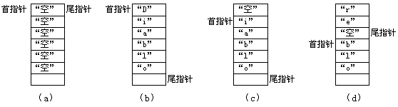

实际的信息传递情况比我所上面所说的复杂一些，键盘在查到有键按下时会将所按键的扫描码送到主机的60H端口，同时发出一个中断信号，我们称这个中断为IRQ1，相应的中断号为09H。CPU收到中断信号后就会执行09H中断服务程序，这个中断服务程序会将扫描码转换为ASCII码并将它们保存到"键盘缓冲区"中。实际上16H中断就是从"键盘缓冲区"中取到所需数据的。
有一点需要注意的是如果我们按下了"Ctrl"或"Shift"之类控制键，那么09H中断服务程序会根据扫描码设置"键盘状态字"，而不将其转换为ASCII码。有了键盘状态字，则键盘中断服务程序就能确定究竟将扫描码"02H"转换为"1"，还是转换为"!"。
键盘不仅在每个键"按下"时会产生中断，在每个键"松开"时也会产生中断信号并发送扫描码，这时的扫描码最高位为被键盘设为1，以此和按下时的扫描码区别开。我们一般将"按下"时的扫描码称为"通码"，将"松开"时的扫描码称"断码"。对于一般字符键的断码键盘中断服务程序都将其忽略，而如果收到Ctrl或Shift之类控制键的断码，键盘中断服务程序会重新设定"键盘状态字"。
上面的介绍引出的两个新的概念："键盘缓冲区"和"键盘状态字"。键盘缓冲区是设在内存特定位置处的一小段连续的存储空间，起始地址位于0040H:001AH，长度为36字节，其中32字节用于保存按键信息。缓冲区的结构很简单，我们可以用DEBUG观察一下：
C:\ASM\>DEBUG[Enter] -d40:1a 3d[Enter]?队列首指针?队列尾指针 0040:0010? 3C 00 3C 00 0D 1C?<.<... 0040:0020?00 3D 3E 34 6C 26 0D 1C-64 20 34 05 30 0B 3A 27 .=>41&..d 4.0.;' 0040:0030?31 02 61 1E 20 39 33 04-65 12 0D 1C 71 10? 1.a. 93.e...q.
前两个字是两个指针，扫描码与ASCII码实际保存在偏移地址001EH处。这两个指针都有名字，我们把第一个指针叫队列首指针，把第二个叫队列尾指针，两个指针的作用是使键盘缓冲区具有"循环队列"的功能。
当系统启动后，首尾两指针都指向缓冲区首，见图6-11（a），我们按下一个键后，比如按下"d"键，键盘中断服务程序取得扫描码20H并将其转换为ASCII码64H，然后服务程序取得队列尾指针，将扫描码和ASCII码都存入尾指针指向的内存单元并将尾指针加2后送回01CH处保存。
如果连续地按键，那么键盘中断服务程序就会连续地将扫描码和ASCII码存入队列尾指针指向的内存单元并使尾指针增量，直到缓冲区充满，如图6-11（b）。这时再次按键，键盘中断服务程序就会让尾指针重新指向缓冲区首，并试图将数据存入缓冲区首部。但是这时由于缓冲区中的数据还没有被应用程序取走，所以键盘中断服务程序不可能将数据存入缓冲区，在这种情况下键盘中断服务程序就会控制喇叭发出鸣叫并丢弃新的按键数据。

当应用程序使用16H中断的0号功能取得按键时，16H中断服务程序就会取得队列首指针和尾指针并比较这两个指针，如果首指针和尾指针不相等，说明键盘缓冲区中有数据，这时16H中断服务程序就会从首指针指向的内存单元中取出扫描码和ASCII码并放入累加器中，然后将首指针加2重新保存在001AH处，最后将AX中的数据返回给应用程序。此时键盘缓冲区的情况如图6-11（c）所示，我们可以看到缓冲区头部空出了两个字节。
如果应用程序连续3次读取按键，那么缓冲区首部就会空出6个字节的空间；这个时候我们继续按键，那么键盘中断就会将数据保存到缓冲区首部，最终键盘缓冲区变成了图6-11（d）所示的情况；可见后面进入缓冲区的数据反而存入了缓冲区前面，这便是所谓的"循环队列"，也称为"环形缓冲区"。
由于16H中断总是从首指针指向的内存单元中取数据，所以键盘缓冲区具有"先入先出"的性质，这和堆栈的性质正相反。队列首指针由16H中断控制，队列尾指针由09H中断控制，这两个指针绕着圈相互追赶，若尾指针追上首指针则说明缓冲区满，而首指针追上尾指针则说明缓冲区变空。我们从DEBUG显示的信息可以看到首尾指针都指向003CH，说明此时缓冲区是空的。如果我们人为地改变尾指针指向那又会有什么情况发生呢？
C:\ASM\>DEBUG[Enter] -a100[Enter] 15E1:0100 MOV AX,0040 ；初始化DS寄存器指向BIOS数据区 15E1:0103 MOV DS,AX 15E1:0105 MOV WORD PTR [001A],001E ；键盘缓冲区首指针指向缓冲区首 15E1:010B MOV BX,001E ；BX寄存器指向缓冲区首 15E1:010E MOV WORD PTR [BX],1372 ；键盘缓冲区内置入"r" 15E1:0112 MOV WORD PTR [BX+02],1C0D ；"r"之后置入回车符 15E1:0117 ADD BX,04 ；计算键盘缓冲区尾指针 15E1:011A MOV [001C],BX ；保存键盘缓冲区尾指针 15E1:011E INT 20 ；结束程序 -g=100[Enter] Program terminated normally -g=100[Enter] Program terminated normally -r?这个r并非通过键盘敲入 AX=0000 BX=0000 CX=0000 DX=0000 SP=FFEE BP=0000 SI=0000 DI=0000 DS=15E 1ES=15E1 SS=15E1 CS=15E1 IP=0100 NV UP EI PL NZ NA PO NC 15E1:0100 B84000 MOV AX,0040
这一小段程序重新设定了队列指针并在缓冲区中填入了小写字母"r"和一个回车符，因此当这个程序结束后DEBUG就会取到这个"r"并把它当做命令来执行，于是屏幕上显示出所有寄存器的值。